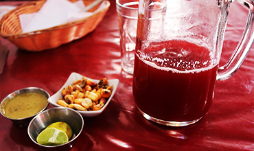
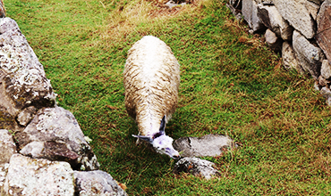
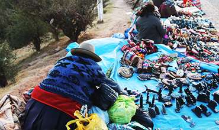

Find a bar

South America is famous for the dance and music, why not indulge yourself a little bit in the cool aura. Dancing to the local music, it will enrich your tour this time.
It doesn’t matter it is a big bar or small one. Some miracles may happen in the local and small bar with your friends or like me, getting new friends with wine and lovely chats.
Buy an alpaca… or its product

Cute and pragmatic (how could I put these two adjectives together…), the alpaca shows uniqueness in Peru. They are so popular and become one major Peruvian mark already.
If you are a vegan who cannot eat the alpaca tenderloin, the wool products from alpaca must your cup of tea. They are cozy definitely guarding coldness. Hats, sweaters, scarfs… many choices, some must be your cup of tea.
Weekend Fair

Except for eating in the normal restaurant, the weekend fair is your alternative as well. As the name shown, it is held on weekends, the local people sell their home-made foods mainly and a few products for tourists and residents too.
Maybe it is not so decent or sanitary, but no worry, just take precautions against those possibilities of being ill. It is a tragedy of missing these gourmets due to worries.